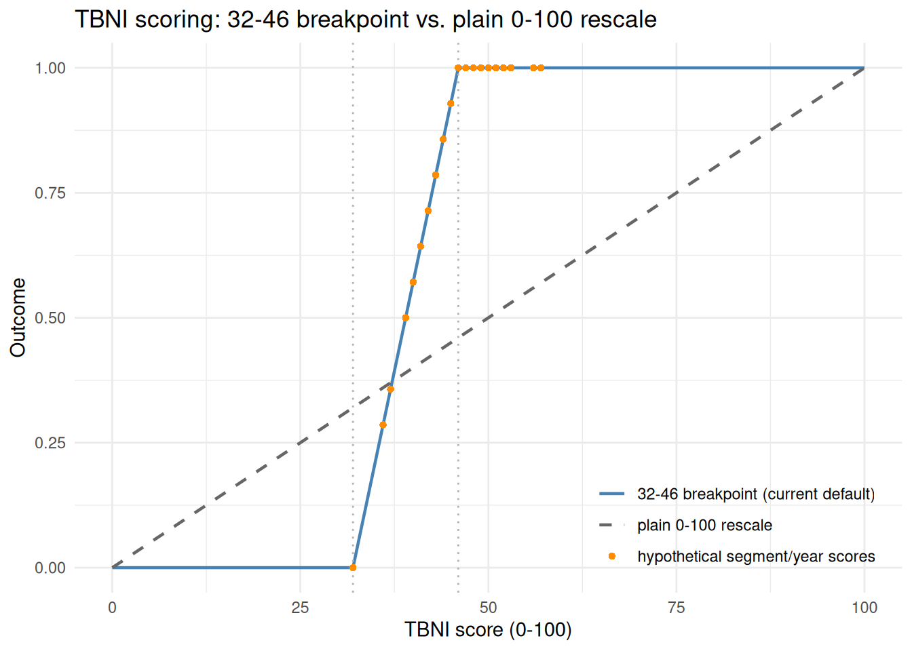
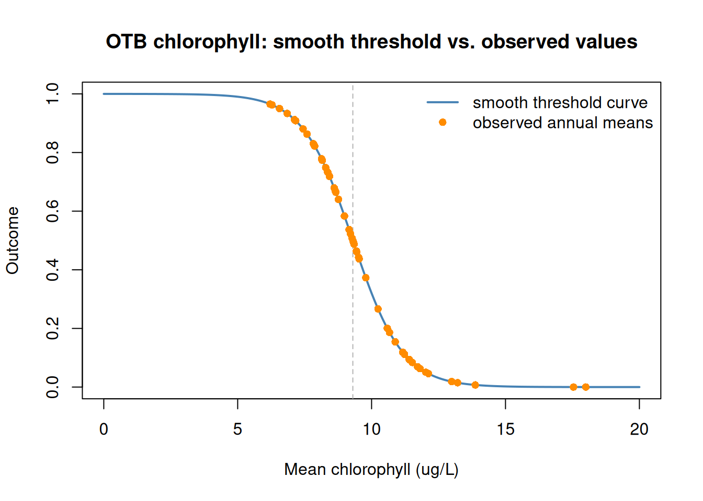
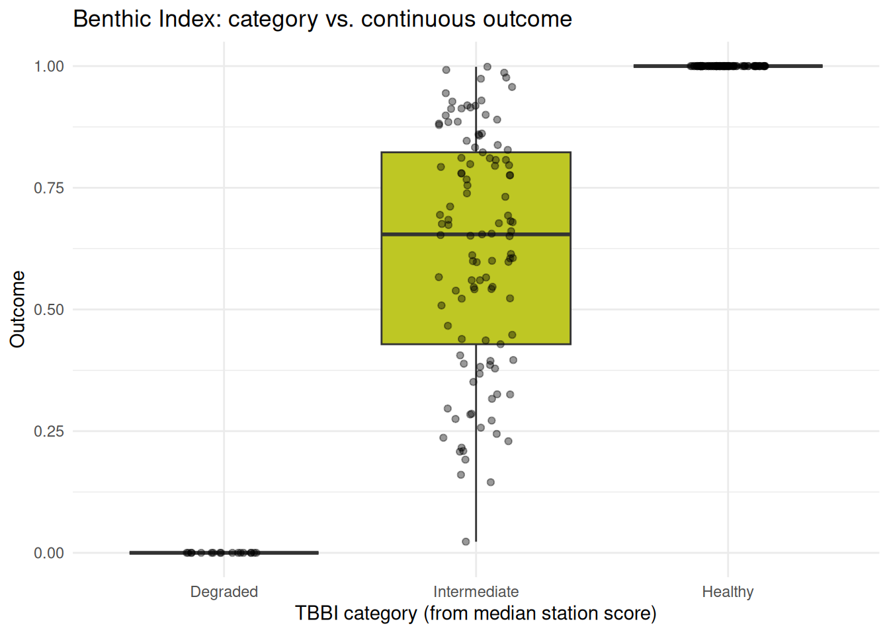
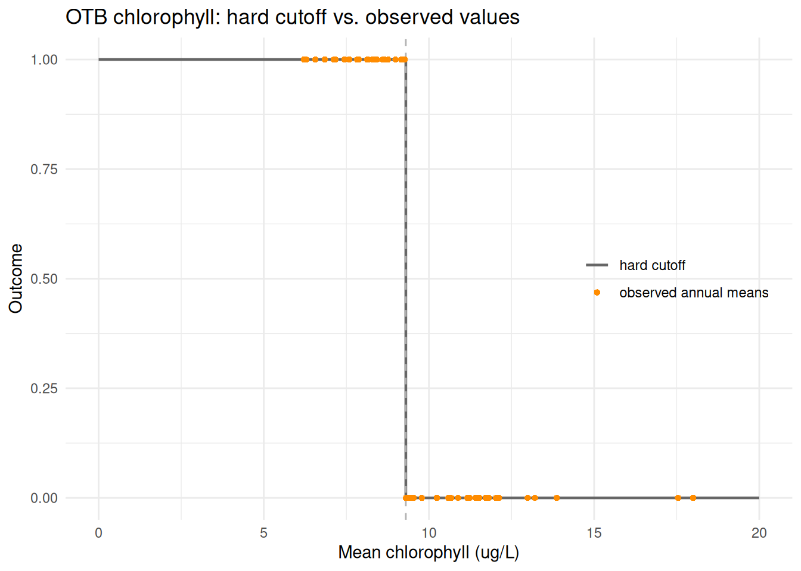
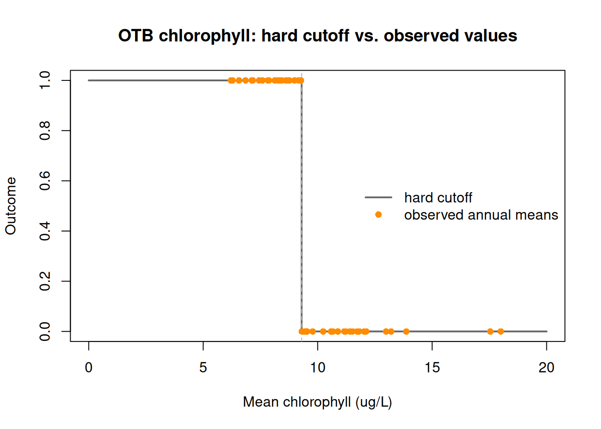
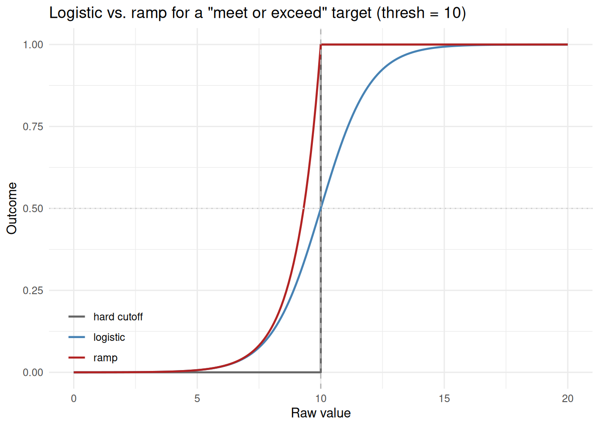
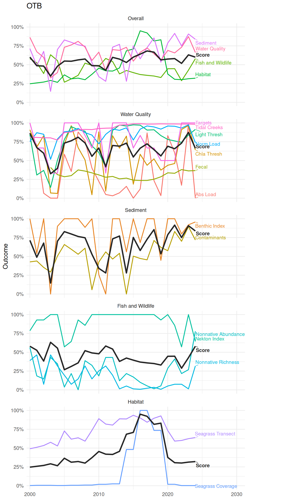

wqattain <- anlz_wq_attain(epcdata)This article describes the full workflow for creating the bay segment annual report card. This includes descriptions of each individual indicator, converting raw indicator values to a common 0-1 outcome scale, combining indicators into category scores and an overall bay segment score, and visualizing the results. The sections below describe the cagories and the indicators within each category, how scoring is calculated, how the scores are combined across indicators and categories, and methods for visualizing the results.
Water Quality
Targets
Combines chlorophyll and light attenuation attainment management targets into a single continuous outcome. Both are derived from an integer value from 0 to 3 that describes a magnitude and duration of exceedance for the target as described in the tbeptools water quality vignette. The two integer values for chlorophyll and light attenuation are summed to derive the outcome score, with lower values giving a higher (better) outcome. These outcomes come directly from the management targets for each bay segment.
Chlorophyll and Light Thresholds
Compares annual mean chlorophyll and light attenuation values directly against bay-segment-specific thresholds, independent of the combined attainment score above. Each gives its own threshold outcome as a smooth logistic transition by default or a hard binary 0/1 with smooth = FALSE (see Scoring). Values below the threshold receive better outcomes.
wqthresh <- anlz_wq_thresh(epcdata)Nutrient and Hydrologic Loading
Compares total nitrogen load and a hydrologically-normalized loading against fixed bay-segment thresholds, each as its own threshold outcome. Results are determined using a smooth logistic transition by default, or a hard binary 0/1 with smooth = FALSE (see Scoring).
Values below the threshold receive better outcomes.
totanndat <- util_rdataload("https://github.com/tbep-tech/load-estimates/raw/main/data/totanndat.RData")
wqload <- anlz_wq_load(totanndat)Tidal Creeks
Assigns each tidal creek to a bay segment, then scores it continuously from a 10-year window of counts of creeks in each management category (monitor/caution/investigate/prioritize). Nominal categories are assigned to numeric values in the range from 0-1. Creek scores are then averaged by bay segment/year, weighted by creek length so longer creek segments contribute proportionally more.
wqtidalcreeks <- anlz_wq_tidalcreeks(tidalcreeks, iwrraw, yrs = 1990:2024)Fecal Indicator Bacteria
Scores each bay segment/year from enterococcus monitoring data using exceed_rate, a continuous, one-sided 90% upper confidence estimate of the true exceedance rate (0-1, lower is better), rescaled to an outcome as 1 - exceed_rate. This is a continuous analog of the A-E letter grade the same underlying calculation also produces.
wqfib <- anlz_wq_fib(enterodata)Sediment
Contaminants
Scores each bay segment/year directly from its average sediment contamination score (PEL/TEL, ave), log-transformed since its A-F grade breakpoints are geometrically spaced.
peltel <- anlz_sed_peltel(sedimentdata, yrs = 1993:2024)Benthic Index
Scores each bay segment/year from the median of its station-level Tampa Bay Benthic Index (TBBI) scores (0-100), rescaled continuously over TBBI’s own grade breakpoints (Degraded below 73, Intermediate 73-87, Healthy above 87). Breakpoint scoring is used, where outcomes below 73 receive 0, those above 87 receive 1, and those from 73-87 are scaled proportionally from 0-1.
tbbi <- anlz_sed_tbbi(benthicdata)Fish and Wildlife
Nekton Index
Scores each bay segment/year 0-100 with the Tampa Bay Nekton Index (TBNI), then rescales to an outcome using TBNI’s own grade breakpoints (On Alert below 32, Caution from 32 to 46, Stay the Course above 46). Scores below 32 receive 0, scores above 46 receive 1, and scores between 32 and 46 are scaled proportionally from 0-1.
tbni <- anlz_fw_tbni(fimdata)Non-natives
These functions are R-based equivalents of those used in the Python pipeline in the tbep-invasives repository (src/tbep_invasives/steps/report_cards.py). The nonnative_obs() function returns non-native species abundance (observations per unit area per year) and richness (unique species per unit area per year) by bay segment, both of which are then converted to percentiles and reversed to an outcome from 0-1 (higher abundance/richness is worse).
nonnative_obs <- anlz_fw_nonnative_obs()
nonnative_abundance <- anlz_fw_nonnative_abundance(nonnative_obs)
nonnative_richness <- anlz_fw_nonnative_richness(nonnative_obs)Habitat
Seagrass Transects
Estimates frequency of seagrass occurrence (0-100) at each bay segment/year from transect monitoring data, then linearly rescales to an outcome from 0-1.
trnsct <- anlz_hab_seagrass_transect(transect)Seagrass Coverage
Compares mapped seagrass acreage against a fixed per-segment target.
A “ramp” threshold outcome is used where an outcome of 1 is received if the threshold is met, whereas outcomes for acreages less than the threshold reduce toward 0 as coverage decreases. The targets are the baywide 40,000-acre seagrass coverage target apportioned across segments by area. Coverage maps are available biennially and non-survey years carry forward the most recent actual estimate and outcome.
cov <- anlz_hab_seagrass_coverage(sgsegest)Scoring
Every indicator above is converted to a 0-1 outcome, where 1 is always the best possible condition. The conversion is accomplished with the util_outcome() function, which handles the scoring differently depending on arguments passed to the function. util_outcome() supports three types of scoring:
-
Continuous - a raw value is linearly rescaled to 0-1 over a specified range. This can occur for the full range of raw values (e.g., seagrass transect frequency of occurrence over its full 0-100 range) or within a subset range of the raw values (e.g., the Nekton Index’s 0-100 score rescaled over just its 32-46 breakpoint window, or the Benthic Index’s median station score over its 73-87 breakpoint window). Values outside of the range are clamped to 0 or 1 depending on the direction of the condition. FIB’s
exceed_rateis also scored this way, reversed since lower is better (from = c(0, 1),reverse = TRUE), as is sediment PEL/TEL’s average contamination score. - Category - a discrete grade or condition category is mapped to a fixed outcome. No indicator currently uses this type, but it remains available for a grade or category with no natural continuous equivalent.
-
Threshold - a raw value is compared against a cutoff (e.g. nutrient loading against a bay-segment target, chlorophyll/light attenuation against their thresholds, seagrass coverage against an acreage target), in one of three ways set by
smooth:-
"logistic"(the default for most threshold indicators) - a smooth outcome exactly 0.5 at the threshold, moving quickly toward 0 or 1 (depending on direction) as a value moves away from it, so values close to the threshold are penalized less harshly than a hard cutoff would. -
"ramp"(the default for seagrass coverage) - an outcome of 1 is received on the “good” side of the threshold and decays toward 0 the further it falls on the “bad” side. This fits a target that’s fine to meet by any margin (e.g. an acreage target), where a value right at the threshold deserves full credit, not half. -
"none"- a hard binary 0 or 1, no transition.
"logistic"and"ramp", the steepness of the transition is set bypct, a fraction of the threshold itself (default 10%) rather than a fixed absolute value, so it stays meaningful across indicators/segments with very different thresholds. LogicalTRUE/FALSEare also accepted forsmooth, mapped to"logistic"/"none". -
# continuous: linearly rescale a raw value between known bounds
util_outcome(75, type = 'continuous', from = c(0, 100))
#> [1] 0.75
# category: map a discrete grade to a fixed outcome
util_outcome('B', type = 'category', levels = c(A = 1, B = 0.75, C = 0.5, D = 0.25, F = 0))
#> [1] 0.75
# threshold: smooth by default, a logistic transition centered on the cutoff
util_outcome(8, type = 'threshold', thresh = 10, op = '<')
#> [1] 0.8807971
# threshold, smooth = "ramp": meeting/beating the cutoff is already full
# credit, decaying toward 0 only on the "bad" side
util_outcome(8, type = 'threshold', thresh = 10, op = '<', smooth = 'ramp')
#> [1] 1
# threshold, smooth = "none" (or FALSE): a hard binary cutoff instead
util_outcome(8, type = 'threshold', thresh = 10, op = '<', smooth = 'none')
#> [1] 1Continuous Example
The plot below compares how the Nekton Index’s 0-100 score is rescaled to an outcome under the current default (from = c(32, 46), TBNI’s own grade breakpoints, anything below 32 is 0 and above 46 is 1) versus scorring across the full range (from = c(0, 100)). Each bay segment/year’s actual TBNI score (from tbni, computed earlier) is overlaid on the current curve. Most observed scores fall inside or above the 32-46 breakpoint window, where the two methods diverge most.

Sediment Contaminants Example
The plot below shows each bay segment/year’s average PEL/TEL score (ave) against its continuous outcome, colored by the A-F grade (grd) that same ave value would have received (kept for reference, but no longer used to compute the outcome). The grey curve (in log-space) is the theoretical relationship that defines the outcome for every point. Values below the A/B breakpoint receive 1 and values below the D/F breakpoint receive 0.

Benthic Index Example
anlz_sed_tbbi() returns a continuous value from 0-1 within the range of the raw TBBI scores between 73-87. Values below 73 or above 87 receive 0 or 1, respectively, consistent with the caetgorical grades assigned with the conventional TBBI (see Benthic Index). The plot below shows how the outcomes relate to the categories.

Smooth vs. Hard Threshold Example
Outcomes that are based on attainment of a threshold or other binary result can be handled differently based on how exceedance could be interpreted.
At it’s simplest level, a binary scoring can be used with a clear break at the the threshold (no indicators use this method). Here is an example for OTB chlorophyll data scored with smooth = FALSE that uses a hard binary cutoff.

Alternatively, a smooth transition can be used at the threshold such that indicator values slightly above or below the threshold are not as harshly penalized. Indicator values at the threshold receive an outcome of 0.5 with values moving towards 0 or 1 the farther the indicator value is from the threshold. The rate of change for the outcome away from the threshold can be changed as needed. The example below demonstrates different options compared to the hard binary cutoff for an arbitrary threshold of 10. The pct values define the rate of change away from the threshold and a larger pct widens the transition around it.

Applying a smooth transition to Old Tampa Bay’s chlorophyll threshold (9.3 ug/L) demonstrates how many observed annual means actually fall within a 10% transition band. For an indicator like this, the default smooth scoring meaningfully changes scoring for a majority of years. All indicators that use the transition threshold scoring use a smooth transition of 10% of the actual threshold value.

A third option for threshold scoring is smooth = "ramp" for targets that are fine to meet by any margin rather than ones where sitting right at the threshold should only count as halfway there. The plot below compares it to "logistic" for the same “meet or exceed 10” target. The logistic option only reaches an outcome of 1 well past the threshold (crossing 0.5 exactly at it, the dotted horizontal line), while ramp reaches exactly 1 the moment the threshold is met.

Combining Scores
Once every indicator has a 0-1 outcome, three functions combine them into increasingly aggregated scores. The diagram below shows the full hierarchy for a single bay segment/year. Each category’s indicators funnel into that category’s score, and the four category scores funnel into the single overall score.
%%{init: {"flowchart": {"useMaxWidth": false, "nodeSpacing": 20, "rankSpacing": 35}, "themeVariables": {"fontSize": "13px"}}}%%
flowchart LR
A1["wq_attain"] --> WQ["Water Quality"]
A2["thresh"] --> WQ
A3["load"] --> WQ
A4["tidal_creeks"] --> WQ
A5["fib"] --> WQ
B1["sed_peltel"] --> SED["Sediment"]
B2["sed_tbbi"] --> SED
C1["tbni"] --> FW["Fish and Wildlife"]
C2["nonnative_abundance"] --> FW
C3["nonnative_richness"] --> FW
D1["seagrass_transect"] --> HAB["Habitat"]
D2["seagrass_coverage"] --> HAB
WQ --> SCORE["Bay Segment / Year Score"]
SED --> SCORE
FW --> SCORE
HAB --> SCORE
classDef indicator fill:#eef2f7,stroke:#8aa1b1,color:#1c1c1c;
classDef category fill:#ffe8b3,stroke:#c98a12,color:#1c1c1c;
classDef score fill:#c8e6c9,stroke:#2e7d32,color:#1c1c1c;
class A1,A2,A3,A4,A5,B1,B2,C1,C2,C3,D1,D2 indicator;
class WQ,SED,FW,HAB category;
class SCORE score;
The core functions to combine outcomes are as follows:
-
anlz_indicators()stacks any number of named indicator data.frames into one long table (bay_segment,yr,indicator,outcome), without filling in gaps where an indicator has no data for a given segment/year. -
anlz_category()callsanlz_indicators()internally, then averagesoutcomewithin each bay segment/year to get a category score. The result also keeps one wide column per indicator, so the indicators behind a category score stay visible. -
anlz_score()is a thin wrapper aroundanlz_category(). The four category scores are themselves just another set of “indicators” to average, giving the overall bay segment score.
wqoverall <- anlz_category(
wq_attain = wqattain,
thresh = wqthresh,
load = wqload,
tidal_creeks = wqtidalcreeks,
fib = wqfib
)
sedoverall <- anlz_category(
sed_peltel = peltel,
sed_tbbi = tbbi
)
fwoverall <- anlz_category(
tbni = tbni,
nonnative_abundance = nonnative_abundance,
nonnative_richness = nonnative_richness
)
haboverall <- anlz_category(
seagrass_transect = trnsct,
seagrass_coverage = cov
)
score <- anlz_score(wqoverall, sedoverall, fwoverall, haboverall)Visualizing Scores
plot_category() and plot_score() both plot a two- or three-ring sunburst to visualize the scores. The overall score is shown in the middle, surrounded by a ring per component, all of which are colored on the same continuous red/yellow/green outcome scale. plot_category() takes the same named indicator data.frames as anlz_category() to plot one category’s indicators around its score, for a chosen bay segment and year.
plot_category(
wq_attain = wqattain,
thresh = wqthresh,
load = wqload,
tidal_creeks = wqtidalcreeks,
fib = wqfib,
bay_segment = 'OTB', yr = 2024
)
plot_category(sed_peltel = peltel, sed_tbbi = tbbi, bay_segment = 'OTB', yr = 2024)
plot_category(
tbni = tbni,
nonnative_abundance = nonnative_abundance,
nonnative_richness = nonnative_richness,
bay_segment = 'OTB', yr = 2024
)
plot_category(
seagrass_transect = trnsct,
seagrass_coverage = cov,
bay_segment = 'OTB', yr = 2024
)plot_score() takes the same four category data.frames as anlz_score() to plot the full hierarchy showing ndicators, then categories, then the overall score for a chosen bay segment and year.
plot_score(wqoverall, sedoverall, fwoverall, haboverall, bay_segment = 'OTB', yr = 2024)Unlike the sunburst plots above, which show one bay segment/year at a time, plot_trend() shows every year at once for a chosen bay segment. Five stacked facets are shown. The top facet shows the overall score for the bay segment as a solid black line and the individual category scores as colored lines. The four facets below the overall facet similarly show the individual category scores and their indicators.
plot_trend(wqoverall, sedoverall, fwoverall, haboverall, bay_segment = 'OTB',
yr_range = c(2000, 2024))